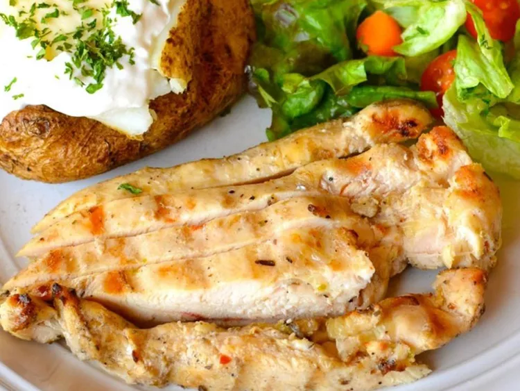

Spicy Grilled Chicken
Document

Description:
Spicy grilled chicken is a flavorful dish where marinated chicken is grilled to perfection, resulting in a juicy and tender dish with a delicious charred exterior. The addition of spices and seasonings gives it a bold and zesty flavor.
Ingredients:
- Chicken pieces (bone-in or boneless)
- Olive oil
- Lemon juice
- Garlic, minced
- Paprika
- Cayenne pepper (or chili powder for milder heat)
- Cumin
- Salt and pepper
- Fresh herbs (such as parsley or cilantro for garnish)
Steps:
Marinate the chicken:
- In a bowl, mix olive oil, lemon juice, minced garlic, paprika, cayenne pepper, cumin, salt, and pepper to create a marinade.
- Coat the chicken pieces in the marinade, ensuring they are well covered. Let it marinate for at least 30 minutes to enhance the flavors.
Preheat the grill:
- Preheat your grill to medium-high heat. Make sure the grates are clean and lightly oiled to prevent sticking.
Grill the chicken:
- Place the marinated chicken pieces on the grill.
- Grill the chicken, turning occasionally, until it is cooked through and has beautiful grill marks. The cooking time will depend on the size and type of chicken pieces.
Check for doneness:
- Use a meat thermometer to ensure the chicken has reached an internal temperature of 165°F (74°C) for safe consumption.
Rest and garnish:
- Once cooked, remove the chicken from the grill and let it rest for a few minutes to allow the juices to redistribute.
- Garnish the spicy grilled chicken with fresh herbs like parsley or cilantro for added flavor.
Serve and enjoy:
- Serve the spicy grilled chicken hot, paired with sides like grilled vegetables, rice, or a fresh salad.